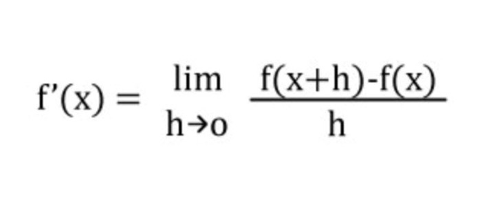

¿QUÉ SON?
Es la razón de cambio instantánea con la que varía el valor de dicha función matemática, según se modifique el valor de su variable independiente. Y su fórmula es:
La derivada de una función es un concepto local, es decir, se calcula como el límite de la rapidez de cambio media de la función en cierto intervalo, cuando el intervalo considerado para la variable independiente se torna cada vez más pequeño. Por eso se habla del valor de la derivada de una función en un punto dado.
TOMADO DE WIKIPEDIA